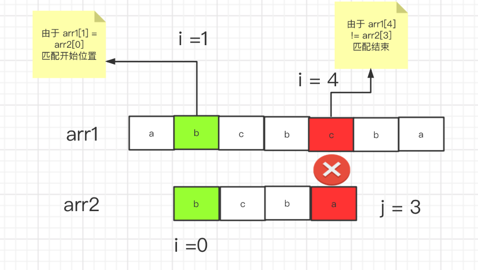
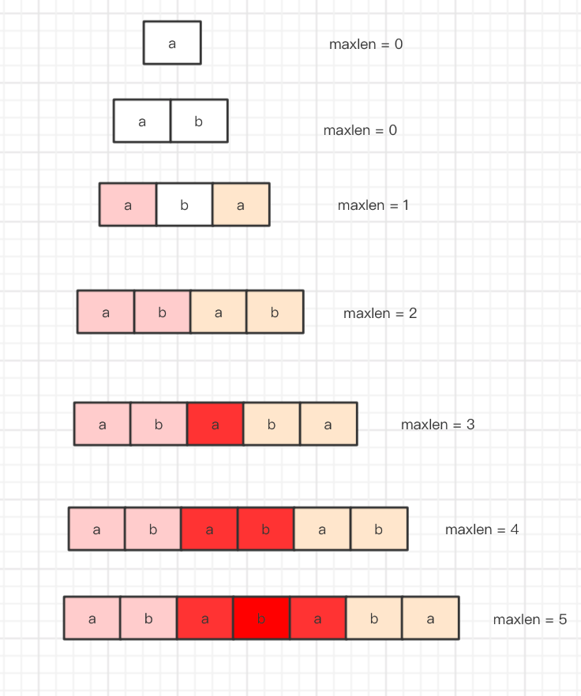
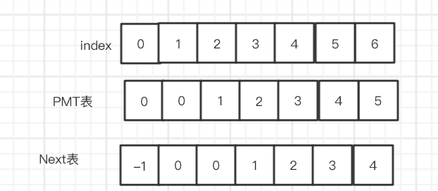
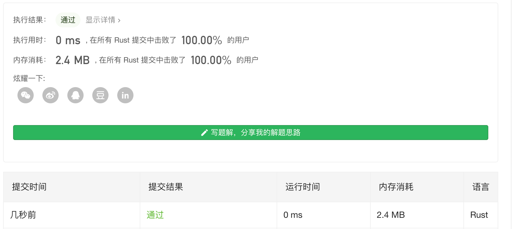

Leetcode 第27题 - strStr() 函数(easy)
实现 strStr() 函数。
给定一个 haystack 字符串和一个 needle 字符串，在 haystack 字符串中找出 needle 字符串出现的第一个位置 (从0开始)。如果不存在，则返回 -1。
示例 1:
输入: haystack = "hello", needle = "ll" 输出: 2
示例 2:
输入: haystack = "aaaaa", needle = "bba" 输出: -1
解题思路
这题可以使用 暴力解法,2层循环 一层 指向 一个字符 内层去逐一 的匹配 字符串。
时间复杂度 是$ O(n^2)$
空间复杂度 $O(1)$
我们 想要尝试另一种做法,KMP算法。
时间复杂度 $O(N)$
空间复杂度 $O(M)$
KMP算法
kmp 算法 代码 非常简洁,紧凑但是 要理解起来还是有一定难度的。
kmp算法分为2步
-
首先要构建 一个 next数组。
-
根据 next 数组直接匹配。
首先 讲这个算法 之前 要明白 普通的双指针为什么 不可以匹配。
我们 可以看到 如果定义 2个指针(索引),从0 开始 指向 2个 数组,不相等 i就往后移,当相等 时 i和 j 都往后移
直到 i 和 j 指向的值不同 那么 就匹配结束。这种思维 是很普遍的 看起来很美好。
如上的数组 如果这么找 的话 , 当 i = 4 处 结束匹配 把 j 重置为 0,i 往后 开始下一轮匹配,这样很明显 后边还剩下
ba 匹配不到 bcba,但是事实上 如果我们忽略掉 i = 1 处的匹配,从 i = 3 处匹配 完全就能匹配的到。我们为了便于讨论 把这个问题先起个名字 叫做 "模式重复错误".
因为 第一次 的匹配导致后面不能完全匹配到字符, 首先 我们思考下 匹配的基本条件至少是开头要一样吧, 那么 也就是说 匹配的字符串 有一个特点，那就是 有和 开头那个字符 一样重复的 字符。
打个比方 abc 我们 可以把
所有的子集 称为 {a,b,c,ab,bc,abc} a模式 b模式 c模式 以此类推。
我们 把 所有 a 开头的 起个昵称 称为 开机模式群 {abcx}
我们 判定 某个字符都是从首字母开始的 也就是说 只要是 "开机模式群" 那么 我们就可以记一次 匹配字符串。
在 abc 中 开机模式群 只有一种组合 ,所以我们只需要 一次判断 。
但如果改成 aba 呢 里面 有2个 a 就有可能 {abax,ax} 就变成了 2种 组合,那么 就要 两次 匹配。
但是当我们 处在 一次匹配模式中,没法中途退出 就会出现 上面的 "模式重复错误" 问题。
那么 解决这个问题,的关键 是 如果我们知道 匹配字符串 包含 几种 "开机模式群" 的组合,那么 我们匹配错误的时候解出 一次匹配模式 然后切换到 另一种 "开机模式群" 状态 就可以 解决这个问题。
那怎么 切换呢,其实 {ax} 是 {abax}的子集,它们 之间 索引相差 值就好了,PMT表其实 就是计算 每个状态 切换 索引之间切相差的值。
而 next 表就是类似这样一个东西 ,让你从 "开机模式群"一种状态 切换到另一种 "开机模式群" 状态.
 参考资料：https://www.bilibili.com/video/BV1Ys411d7yh?t=710
use std::borrow::Borrow; pub fn get_next(needle: &String) -> Vec<i32> { let mut tmpvec = Vec::with_capacity(needle.len()); tmpvec.push(0); let mut j = 0; let mut i = 1; for _ in 1..needle.len() { if needle.as_bytes()[i] != needle.as_bytes()[j] { while needle.as_bytes()[i] != needle.as_bytes()[j] && j >= 1 { j = tmpvec[j - 1]; } } if needle.as_bytes()[i] == needle.as_bytes()[j] { j += 1; } tmpvec.push(j); i += 1; } let mut next: Vec<i32> = Vec::with_capacity(needle.len()); next.push(-1); for i in 0..tmpvec.len() - 1 { next.push(tmpvec[i] as i32); } next } pub fn str_str(haystack: String, needle: String) -> i32 { if needle.len() == 0 { return 0; } let next = get_next(needle.borrow()); let mut i = 0; let mut j = 0; while i < haystack.len() { if haystack.as_bytes()[i] == needle.as_bytes()[j] { j += 1; if j == needle.len() { return (i - j + 1) as i32; } i += 1; } else { if j != 0 { j = next[j] as usize; }else{ i += 1; } } } return -1; } fn main() { let str1 = String::from("mississippi"); let str2 = String::from("issip"); println!("{}", str_str(str1, str2)); }